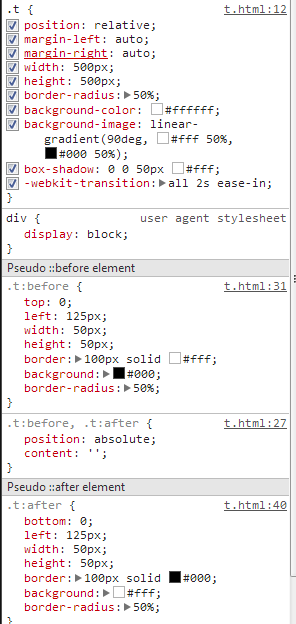

太极
无极生太极，两极生两仪，两仪生四象，四象生八卦 --- 鹏灰
鹏灰不仅说出了一句大家都听不懂的话,而且做了一个大家都看不懂的东西,请大家跟着我念,"当当当当":
DEMO
恩没错又是一个div，我们组织都喜欢用一个div，让我们来看看样式：
嗯，这里并没有用前面没有讲过的新技术，还是用伪类就把这个太极做出来了。欢呼一声鹏辉哥哥流弊。
为什么放出这个实例？因为我们在已有的知识点上面实践后才能做出有创意的东西，如果只是死守着新的知识点，那我们并不能活学活用，所以如果看到这里你没有用伪类或者是阴影做一个自己的图形，那么这篇文章你应该是白读了。